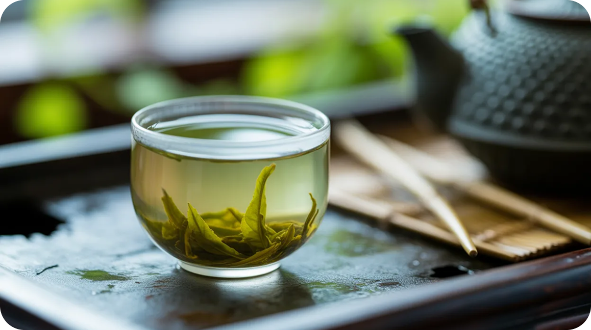
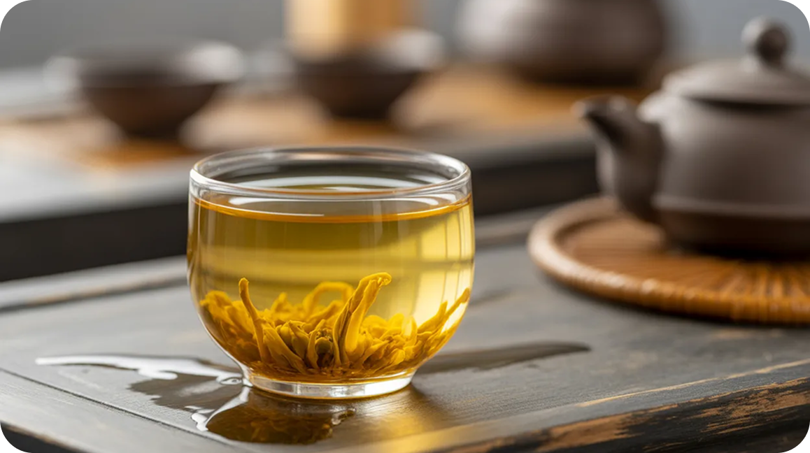
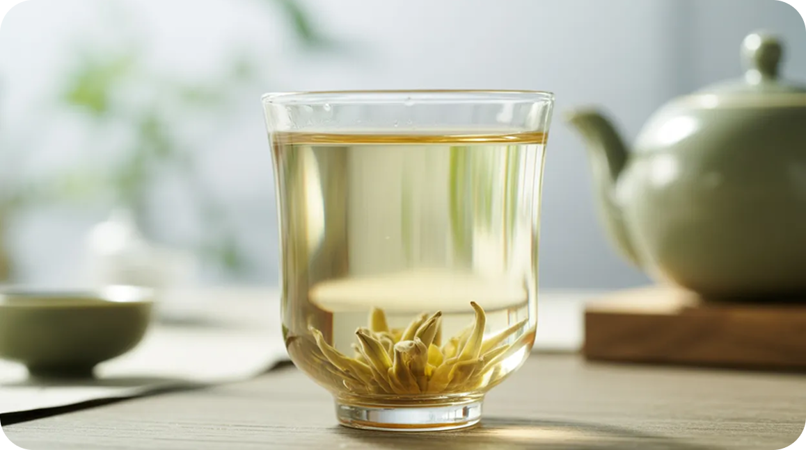
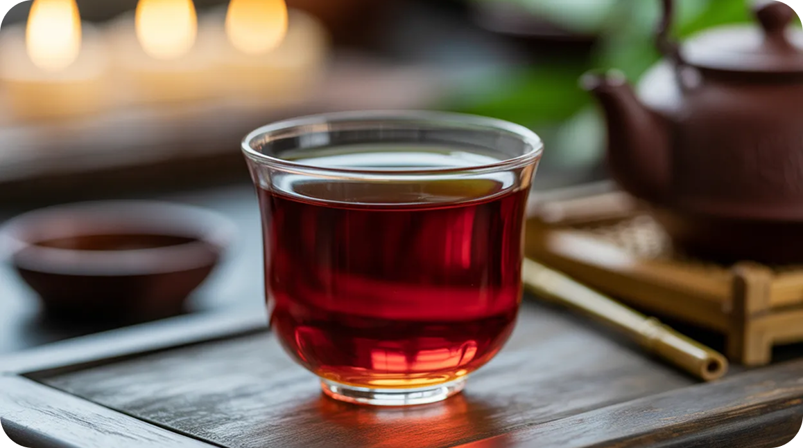
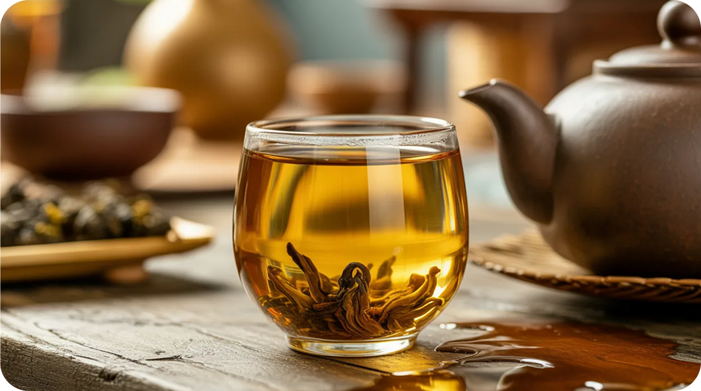
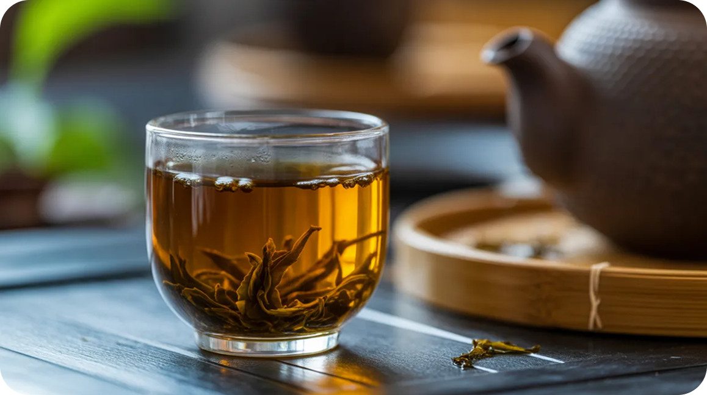

Самый нежный по обработке.
Освежает, дарит бодрость и укрепляет организм

Тот же зелёный чай, но прошедший через процедуру томления.
Менее раздражителен
для желудка

Изготавливается из определённого сорта куста, и в Китае считается лекарственным средством

Успокаивающий и согревающий.
Хорошо повышает иммунитет и даёт силы

Сложный в изготовлении чай, обладающий яркими фруктовыми или цветочными ароматами

Знаменит своим особым вкусом, запахом и воздействием на организм
